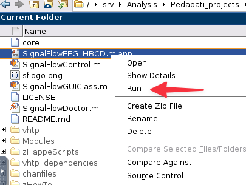
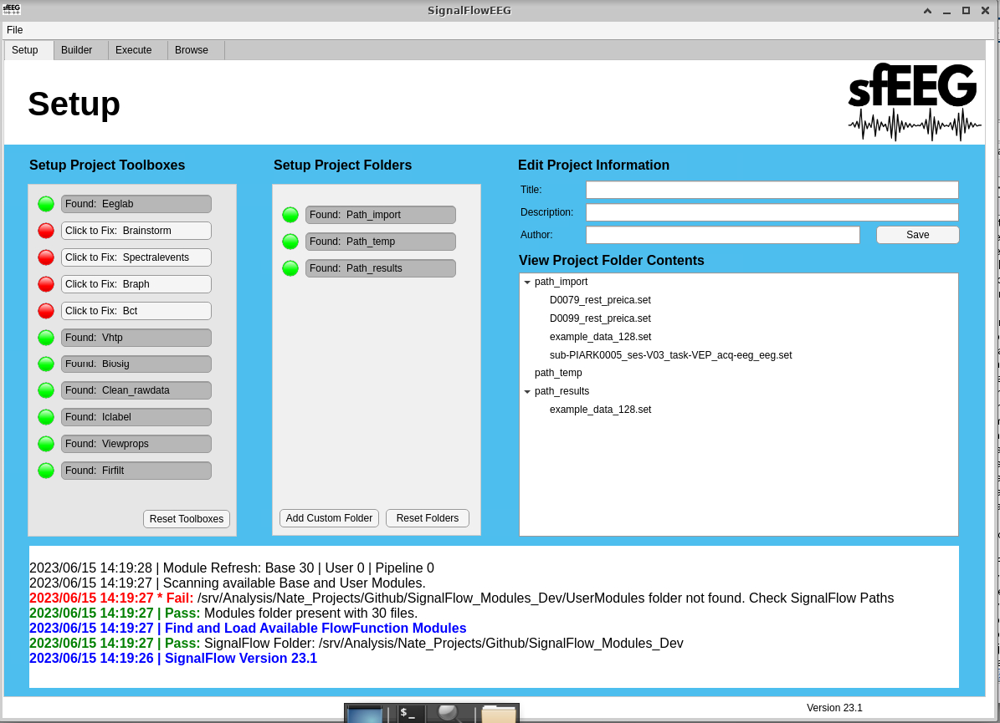
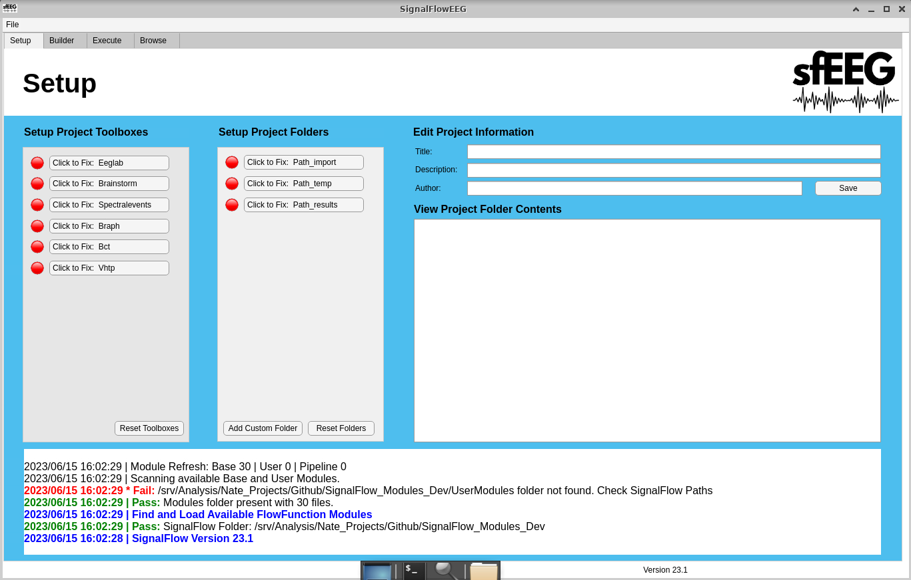
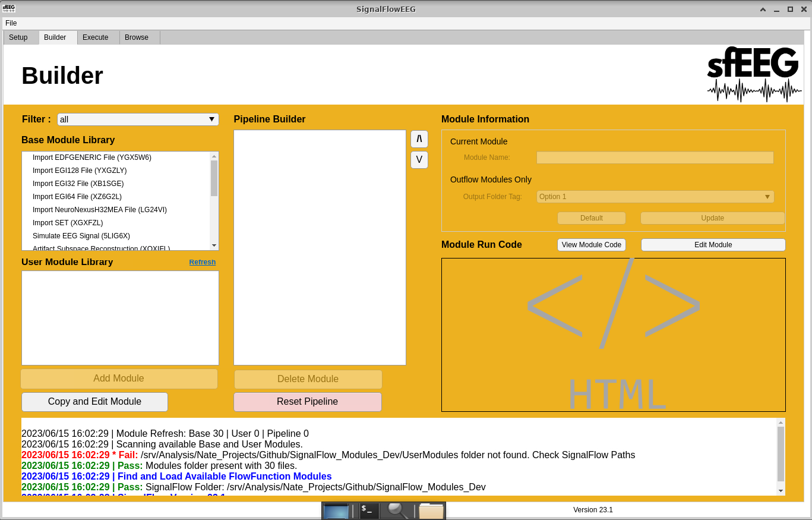
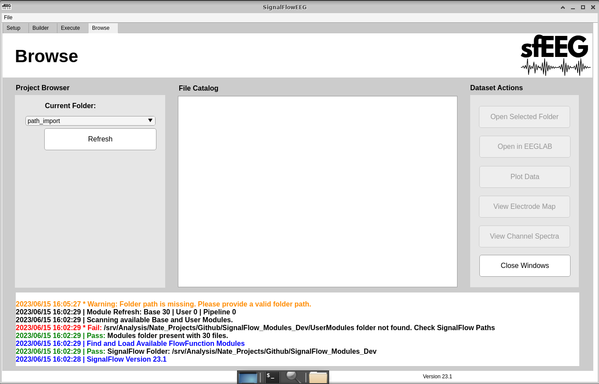

3 Walkthrough
Install SignalFlow and other toolkits. See Section 3.1.
Organize EEG files. See Chapter 4.
Start the GUI. See Chapter 5 for more details.
Setup toolboxes, dependancies, folders, and project. See Chapter 6 for more details.
Importing data and setting up project folders
Navigate to the Builder tab. See Chapter 7 for more details.
Add the following modules in order, for information on adding modules to the pipeline see Section 7.2.
- Import Insert EEG file type File
- Resample EEG data (500 Hz)
- Highpass Filter (0.3 Hz)
- Lowpass Filter (35 HZ)
- Wavelet Denoise
- Artifact Subspace Reconstruction
- Channel Interpolation
- TODO Add ERP to SignalFlow
- Export Set
Navigate to the Execute tab. See Chapter 8 for more details.
Left-click the “Execute (Loop)” button.
Wait for pipeline to complete. You should be able to watch the Matlab Command Window.
Navigate to the Browse tab. See Chapter 9 for more details.
View your data using the tools provided.
3.1 Downloading SignalFlow from GitHub
3.2 Overview
The source code for SignalFlow is hosted on GitHub. There are two primary methods to acquire the code - either through utilizing Git software or directly downloading from the website. However, due to the inclusion of submodules pertaining to other necessary programs, we highly recommend the use of Git for downloading SignalFlow. The direct web download approach requires manual downloading and arrangement of each piece of software within the source code directory, which could prove to be a more time-consuming process.
3.3 Method 1: Using Git
Check if Git is installed:
Open a terminal or command prompt and run the following command:
git --versionIf Git is installed, you will see the version number. If not, proceed to the next step.
Install Git:
Download the install from the official Git website for your operating system at official Git website.
Create a ‘github’ directory: Choose a location on your drive that will be used to store your toolboxes.
Run use your file explorer or run following command to create a new directory called ‘github’ and navigate to it:
mkdir github cd githubClone the SignalFlow repository with submodules:
Run the following command to clone the repository and its submodules:
git clone --recurse-submodules https://github.com/cincibrainlab/SignalFlowEEG_HBCD.gitThis will clone the repository and its submodules into the ‘github’ directory. The output will be displayed in the terminal or command prompt.
Clone other necessary toolkits: In addition to SignalFlowEEG, you may need to clone several other toolkits. Here are the necessary commands:
EEGLAB:
git clone --recurse-submodules https://github.com/sccn/eeglab.gitBrainstorm:
git clone --recurse-submodules https://github.com/brainstorm-tools/brainstorm3.gitHAPPE Pipeline:
git clone --recurse-submodules https://github.com/PINE-Lab/HAPPE.gitMADE Pipeline:
git clone --recurse-submodules https://github.com/ChildDevLab/MADE-EEG-preprocessing-pipeline.gitAfter cloning these repositories, you’ll have all the necessary toolkits for your EEG data analysis. Make sure to keep these repositories up-to-date by pulling the latest changes regularly by using the command:
git pull --recurse-submodules
3.4 Method 2: Downloading Toolkits as Zip Files
If you prefer, you can download each repository individually as a zip file. This can be done from the main page of each repository on GitHub. Note that this method will require additional steps to organize the downloaded content.
Here are the steps to download and organize the repositories:
Navigate to each repository’s GitHub page in your web browser.
Click on the
Codebutton and then clickDownload ZIP.Once the download is complete, extract the ZIP file.
Create a new folder in your
githubdirectory for each extracted repository. The name of the folder should match the repository name.
Here are the links to each repository: - SignalFlow: https://github.com/cincibrainlab/SignalFlowEEG_HBCD.git - VHTP: https://github.com/cincibrainlab/vhtp - VHTP Dependencies: https://github.com/cincibrainlab/vhtp_dependencies - HAPPE Pipeline: https://github.com/PINE-Lab/HAPPE - MADE Pipeline: https://github.com/ChildDevLab/MADE-EEG-preprocessing-pipeline
Note: For the VHTP and VHTP Dependencies, make sure to place these folders in the SignalFlowEEG_HBCD folder, as they are necessary for certain SignalFlow operations.
EEGLAB and Brainstorm must be downloaded through their respective non-github websites. This is because any submodules cannot be downloaded through the github website without git.
- EEGLAB: https://sccn.ucsd.edu/eeglab/index.php
- Brainstorm:https://neuroimage.usc.edu/brainstorm/Introduction
After extraction, you will have the complete repository with all its files and folders available on your computer.
4 Preparing and Organizing Files
4.1 Overview
When working with complex data like EEG datasets, a clear and concise directory structure is essential for efficient data management and processing. A well-organized file structure improves reproducibility and ease of understanding for others (and your future self).
Considering the diverse storage requirements of different processes, we suggest splitting up your directories to increase versatility. Our recommendation includes creating three main directories: data, temp, and results.
These directories should be nested within a project-specific folder to separate and manage multiple projects effortlessly. We also advise creating a readme.txt file in the main folder and describing the contents and purpose of the project and folders.
Here’s a simple, recommended structure:
- ProjectName/
- readme.txt
- data/
- temp/
- results/
The data directory should contain all the raw data that will be processed. The temp directory will store any temporary files created during data processing, and the results directory will hold the output from your analyses.
4.2 Using the BIDS format
The Brain Imaging Data Structure (BIDS) is a formal way to name and organize neuroimaging data and metadata in a file system. The goal is to simplify communication and collaboration among users. The format enables easier data validation and software development through consistent paths and naming for data files.
SignalFlow does not require the use of BIDS, but it maybe useful for certain projects. You can incorporate the BIDS structure into the project organization strategy described above by placing a BIDS-compliant data folder inside the data directory.
- ProjectName/
- readme.txt
- data/
- BIDS/
- sub-01/
- ses-01/
- eeg/
- sub-01_ses-01_task-mytask_eeg.edf
- sub-01_ses-01_task-mytask_channels.tsv
- sub-01_ses-01_task-mytask_electrodes.tsv
- sub-01_ses-01_task-mytask_events.tsv
- ...
- ...
- temp/
- results/SignalFlow relies on helper functions from the Cincinnati Visual High Throughput Pipeline (vHTP). The standard file list utility (util_htpDirListing.m) can create a custom file list from a BIDS directory structure.
Remember, a well-planned and maintained directory structure can save time and prevent confusion as your project grows.
5 Starting the SignalFlow Application
Follow the steps below to launch the SignalFlow graphical user interface (GUI) or APplication via MATLAB:
Open MATLAB.
Launch the MATLAB software from your applications menu or desktop shortcut.
Navigate to the SignalFlow Directory.
The SignalFlow directory is typically located within the
GitHubfolder in yourDocuments. This might vary depending on where you cloned the repository. The paths are generally as follows:For Windows:
C:\\Users\\**YourUsername**\\Documents\\github\\SignalFlow_HBCDFor Linux or macOS:
/home/**YourUsername**/Documents/github/SignalFlow_HBCD
Replace
**YourUsername**with your actual username on your computer.To navigate to this directory in MATLAB, you can use the
cd(change directory) command in MATLAB’s Command Window:cd('path-to-directory')Replace
'path-to-directory'with the appropriate path above.Find the SignalFlow application file.
In MATLAB’s Current Folder pane (typically located on the left side of the interface), scroll to locate the SignalFlow application file named “SignalFlowEEG.mlapp”.
Run the SignalFlow application. 
Right-click on the “SignalFlowEEG.mlapp” file and select “Run” from the context menu.
Check SignalFlow Application.
The SignalFlow Application should now open. If the GUI does not open or you encounter an error, ensure that you have the correct directory and the “SignalFlowEEG.mlapp” file is present.
With these steps, you should be able to successfully launch the SignalFlow EEG Application in MATLAB.
6 Setup Tab
 * The setup tab is the starting page for every user. It allows the user to configure their workstation and pipeline to their indidual needs.
6.1 Adding Dependancies
- Navigate to the “Setup” Tab.
- Decide which toolbox/dependency you would like to add . A. A Red circle indicated the toolbox/dependency has not been added. B. A Green circle indicates that the toolbox/dependency has been added.
- Left-click on the “Click to Fix: Insert Toolbox”.
- File Explorer will open.
- Select the directory that contains your toolbox. Click “Open” in the file explorer. A. This can vary based on the toolbox, contact us if you have issues .
- The circle should turn from red to green, may take a second due to SignalFLow checking if it’s the right toolbox.
6.2 Adding Projct Folder locations
- Navigate to the “Setup” Tab.
- Decide which folder you would like to add. A. A Red circle indicated the folder has not been added. B. A Green circle indicates that the folder has been added.
- Left-click on the “Click to Fix: Insert folder”.
- File Explorer will open.
- Select the directory you would like to add. Left-click “Open” in the file explorer.
- The circle will turn from red to green.
6.3 Adding Custom Projct Folder locations
- Navigate to the “Setup” Tab.
- Left-click the “Add Custom Folder” button.
- A Matlab figure will open.
- Left-click the “Select Directory” button.
- Select the directory you would like to add. Left-click “Open” in the file explorer.
- Enter a tag. A tag is an easily recognizable name used for selecting this Projct Folder later.
- Left-click the “Confirm” button.
- A new project foler will be added. The circle will turn from red to green.
6.4 Edit Project Information
- Navigate to the “Setup” Tab.
- Enter a Title for your project.
- Enter a Description for you project.
- Enter an Author for your project.
- Left-click the “Save” button.
7 Builder Tab
 * The Builder tab is used to create the pipeline and edit modules. Most work is done in this tab.
7.1 Filter Modules
- Navigate to the “Builder” Tab.
- Left-click the filter dropdown.
- Select the filter you would like to use.
- Module Libraries will only show modules that agree with your filter.
7.2 Adding Modules
- Navigate to the “Builder” Tab.
- Left-click the module you would like to use.
- This can be from the both the Base and User module libraries.
- Below the Base and User module libraries, there is an “Add Module” button, left-click it.
- The module will the be added to the pipeline. It will show up in the Pipeline Builder.
7.3 Copy and Edit Module TODO this might have a bug
- Navigate to the “Builder” Tab.
- Left-click the module you would like to use.
- This can be from the both the Base and User module libraries.
- Below the Base and User module libraries, there is an “Add Module” button, left-click it.
- The module will then be opened in Matlab.
- Edit any parameters or code.
- Save the Module file.
- The Module file should show up in the User module library.
7.4 Delete Module
- Navigate to the “Builder” Tab.
- Left-click the module you would like to delete.
- This can only be from the Pipeline Builder
- Below the Pipeline Builder, there is an “Delete Module” button, left-click it.
- The Module will be removed from the pipeline.
7.5 Reorder Modules
- Navigate to the “Builder” Tab.
- Left-click the module you would like to reorder.
- This can only be from the Pipeline Builder.
- To the right of the Pipeline Builder, there are 2 arrows.
- Left-click the arrow that corresponds with the direction you would like to move the module.
- The Module will be reordered in the pipeline.
7.6 Reset Pipeline
- Navigate to the “Builder” Tab.
- Left-click the “Reset Pipeline” button.
- All Modules within the Pipeline Builder will be deleted.
7.7 Change Module Information
- Navigate to the “Builder” Tab.
- Enter the new Module Name.
- If the module is an outflow module. A. Select the needed output folder tag in the dropdown.
- Left-click the “Update” button.
- Your changes will be saved.
- If you would like to return to default name and folder tag A. Left-click the “Default” button.
8 Execute Tab
 * The execute tab is used to execute the pipeline on EEG files. Users also have buttons that serve as helpful tools.
* The execute tab is used to execute the pipeline on EEG files. Users also have buttons that serve as helpful tools.
8.1 Refresh
- This button is used to refresh the workflow status and file catalog when a change to the file sytem or pipeline has occured.
- An example of this would be adding a file to the import directory. The user must click the “Refresh” button in order to see it in the File Catalog.
8.2 Execute (Loop)
- This button is used to execute the pipeline on all eeg files in the import directory. These will be done one at a time.
- Use this if there are steps that require user input. A. Examples of this include: Remove channels, remove epochs, etc.
8.3 Execute (Parallel)
- This button is used to execute the pipeline on all eeg files in the import directory. These will be done all at the same time.
- This should only be used when the follwoing are true. A. Use this if there are no steps that require user input. Examples of this include: Remove channels, remove epochs, etc. B. You have a high performance computer. C. The pipeline takes longer than 1 minutes to run on a single eeg file. The setup and tear down of workers may take some time. inefficient use could make the processing time longer. D. You have the Matlab Parralel Processing Toolbox
8.4 Execute (File)
- This button is used to execute the pipeline on a selected eeg file in the import directory.
- To use this button:
- Left-click your desired file in the File Catalog.
- Left-click the “Execute (File)” button.
8.5 Open Import Folder
- This button is used to open the import directory in the computers file explorer.
8.6 Open Export Folder
- This button is used to open the selected directory in the computers file explorer.
- To use this button:
- Left-click your desired directory in the File Catalog.
- Left-click the “Open Export Folder” button.
8.7 Open in EEGLAB
- This button is used to open a selected eeg file in the EEGLAB gui.
- To use this button:
- Left-click your desired file in the File Catalog.
- Left-click the “Open in EEGLAB” button.
8.8 Plot Data
- This button is used to plot data for a selected eeg file.
- To use this button:
- Left-click your desired file in the File Catalog.
- Left-click the “Plot Data” button.
8.9 View Electrode Map
- This button is used to view the electrode map for a selected eeg file.
- To use this button:
- Left-click your desired file in the File Catalog.
- Left-click the “View Electrode Map” button.
8.10 View Channel Spectra
- This button is used to view the channel spectra for a selected eeg file.
- To use this button:
- Left-click your desired file in the File Catalog.
- Left-click the “View Channel Spectra” button.
9 Browse Tab
 * The browse tab is used to analyze and look at data. The user has access to many tools to aid with this.
9.1 Select Project Folder
- Navigate to the “Browse” Tab.
- Left-click the current folder dropdown.
- Select the folder you would like to see.
- The file catalog will be updated based on your selection.
9.2 Refresh
- This button is used to refresh the file catalog when a change to the file sytem or pipeline has occured.
- An example of this would be adding a file to the import directory. The user must click the “Refresh” button in order to see it in the File Catalog.
9.3 Open Selected Folder
- This button is used to open the selected directory in the computers file explorer.
- To use this button:
- Left-click your desired directory in the File Catalog.
- Left-click the “Open Export Folder” button.
9.4 Open in EEGLAB
- This button is used to open a selected eeg file in the EEGLAB gui.
- To use this button:
- Left-click your desired file in the File Catalog.
- Left-click the “Open in EEGLAB” button.
9.5 Plot Data
- This button is used to plot data for a selected eeg file.
- To use this button:
- Left-click your desired file in the File Catalog.
- Left-click the “Plot Data” button.
9.6 View Electrode Map
- This button is used to view the electrode map for a selected eeg file.
- To use this button:
- Left-click your desired file in the File Catalog.
- Left-click the “View Electrode Map” button.
9.7 View Channel Spectra
- This button is used to view the channel spectra for a selected eeg file.
- To use this button:
- Left-click your desired file in the File Catalog.
- Left-click the “View Channel Spectra” button.
9.8 Close Windows
- This button is used to close all matlab figures/windows. Matlab and the SignalFlowEEG GUi will not be closed.